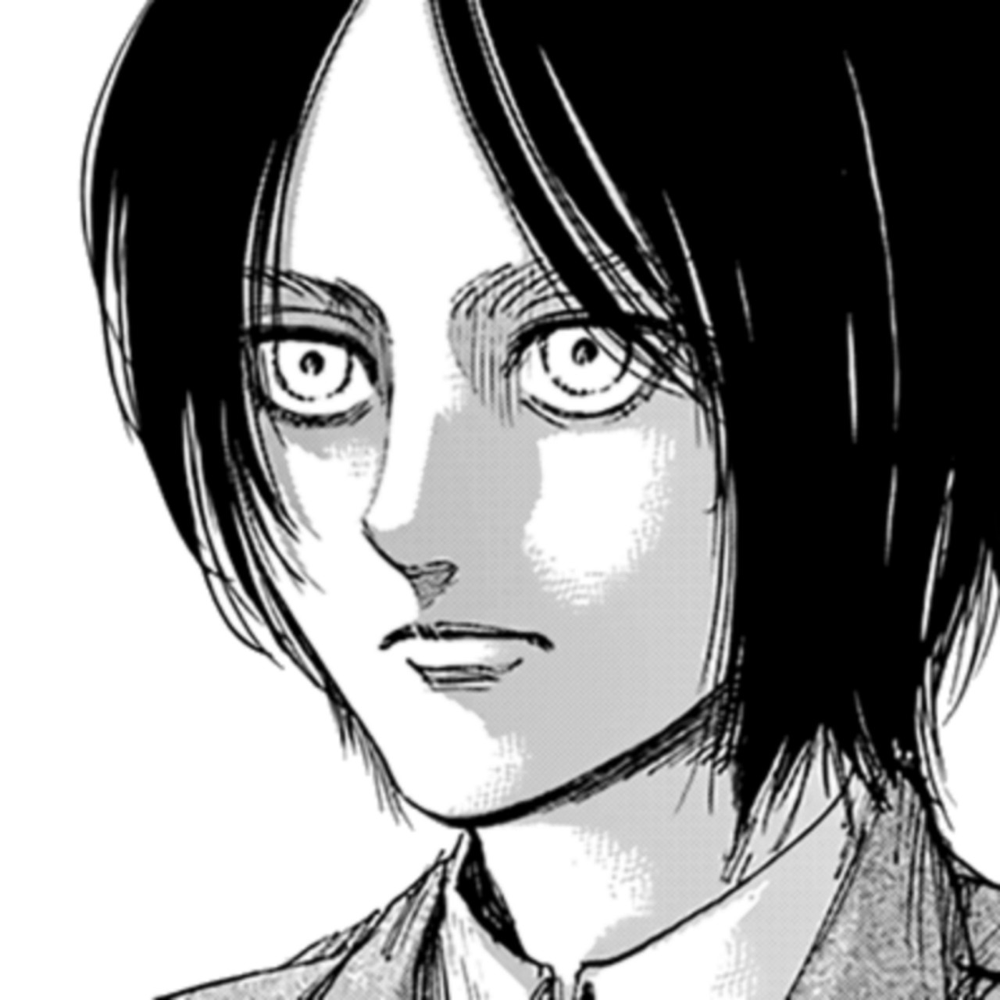
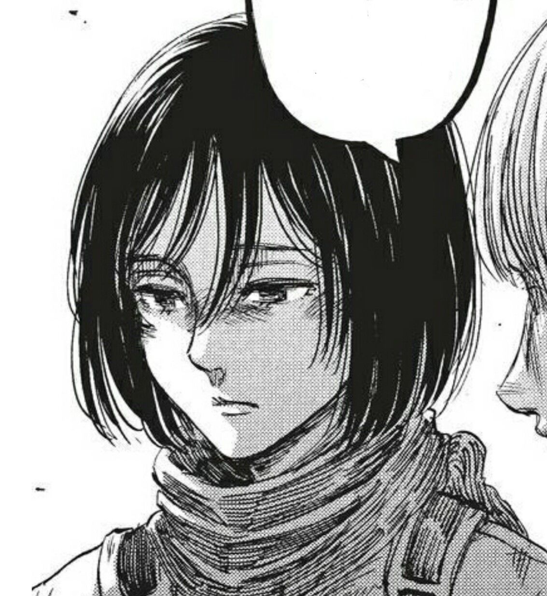
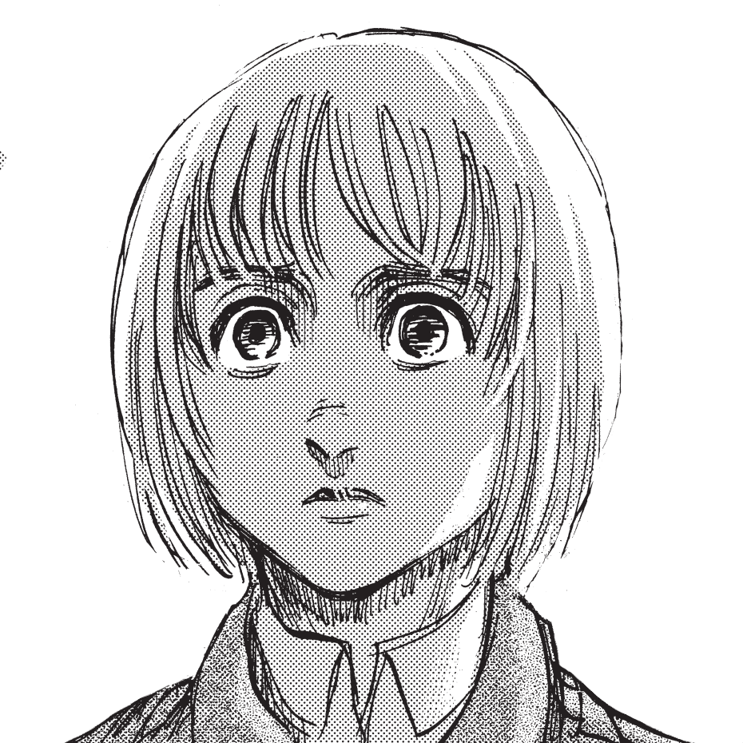

Лучше всего Эрена характеризуют такие определения, как целеустремлённость, упорство, импульсивность. С самого детства Эрен мечтал вступить в Разведкорпус и выйти за пределы стен. Он сравнивал жизнь людей в Стенах с жизнью скота в клетке.
Она считает друзей своей семьёй, которую она не может позволить себе потерять. Обладает выдающимися физическими способностями. Её потребность защищать Эрена повлияла на её становление как одного из сильнейших воинов человечества
Элитный солдат Разведкорпуса. Друг детства Эрена Йегера и Микасы Аккерман. Хоть Армин и не входит в топ 10 лучших кадетов 104-о кадетского корпуса, его интеллект и стратегический гений делают его одним из самых ценных бойцов Разведкорпуса.
